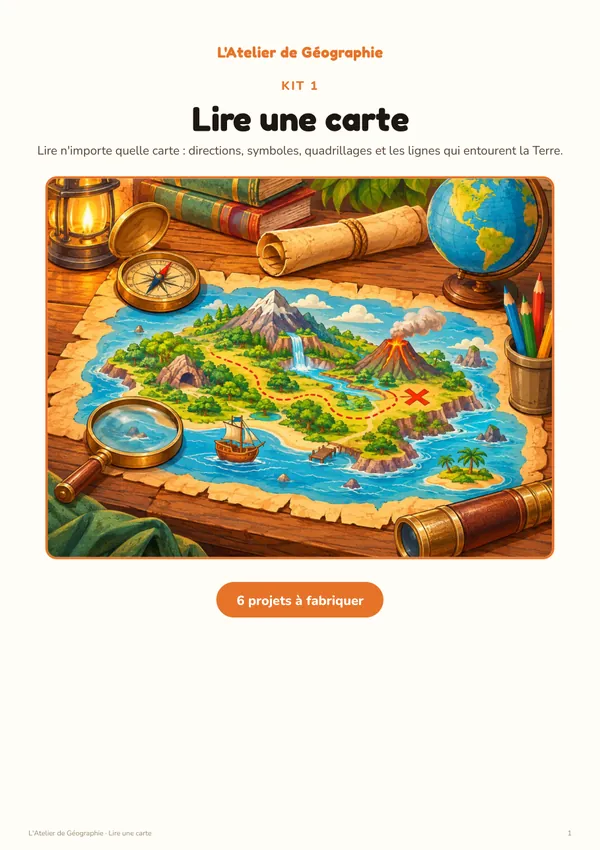
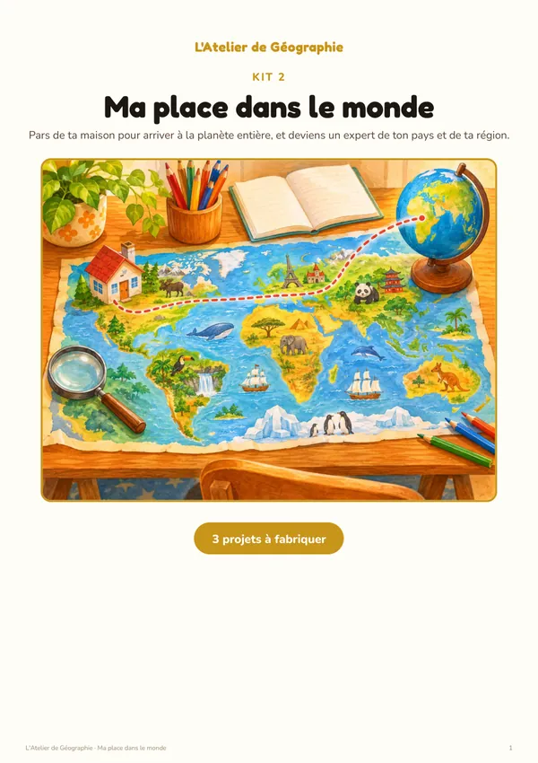
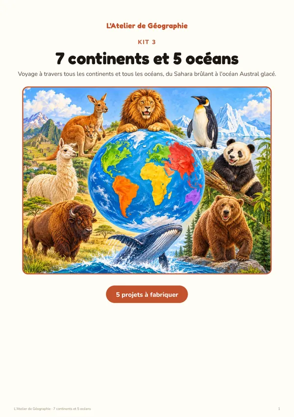
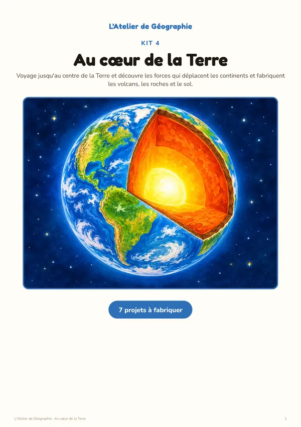
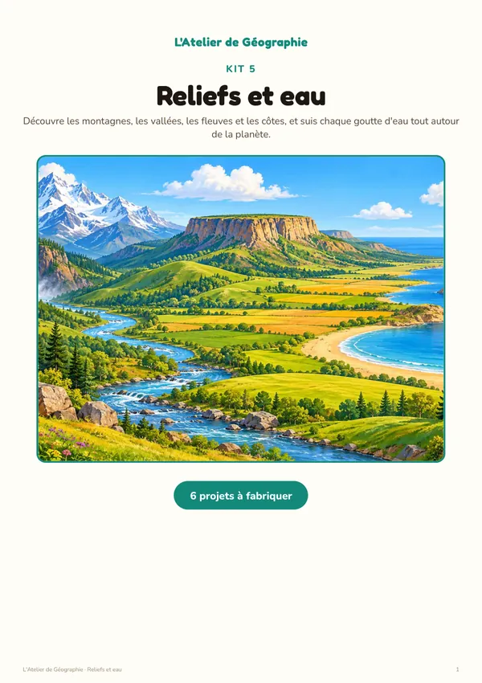
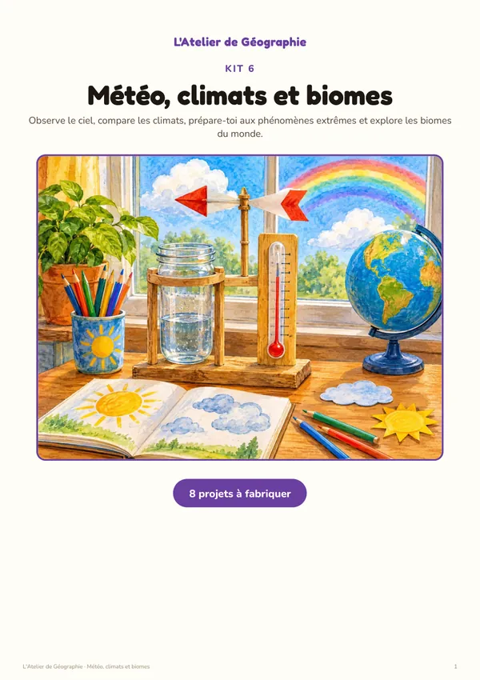
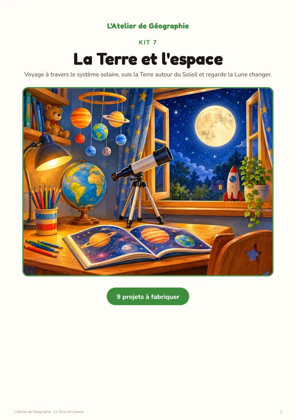
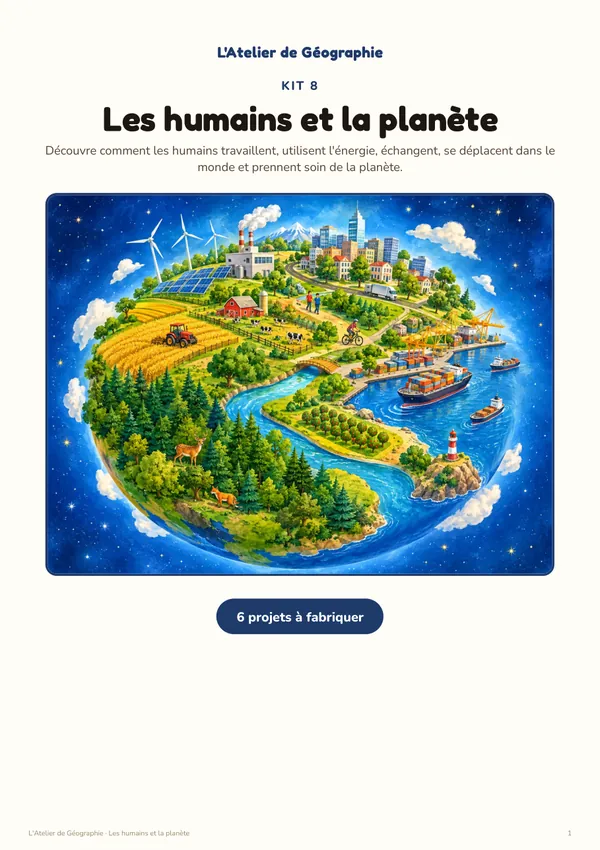

Kit 1
Vous trouverez ici les 8 kits en PDF. Chacun existe en deux versions : en couleur, et en noir et blanc pour que les élèves les colorient. Et en bonus, le jeu « Le Tour du Monde », à jouer directement dans le navigateur.
Le jeu de géographie pour la classe ou la maison, sur ordinateur, tablette ou téléphone. 6 catégories : pays et capitales, langues du monde, fleuves et océans, montagnes, monuments célèbres, culture et curiosités.








Imprimez sur du papier A4. Pour les maquettes 3D, un papier plus épais (160–200 g) est idéal, mais le papier ordinaire fonctionne aussi.
Commencez par le kit 1, ou par le thème que vous étudiez en ce moment. Chaque kit commence par un guide de l’enseignant.